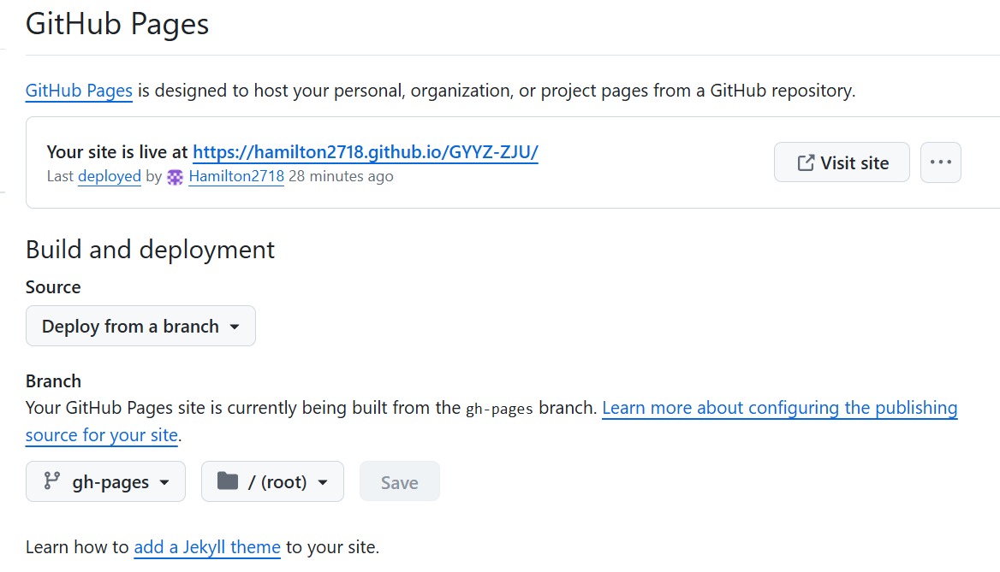
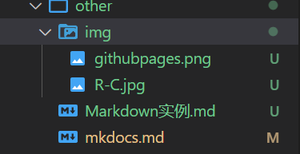

发布网站
一、安装：
在cmd中执行
和
1
| pip install mkdocs-material
|
二、创建
在D盘中输入
这里的myproject是你的文件夹名字(下面都用my-wiki代替)
mkdocs.yml是你的你的配置文件，在里面修改好之后，cd my-wiki
输入
会跳出：
这个网址点进去之后可以本地预览
三、更改主题：
在mkdocs.yml里输入：
1
2
3
4
| site_name: My site
site_url: https://mydomain.org/mysite
theme:
name: material
|
再重新serve即可
四、部署
在github上创建仓库，权限设为public，然后依次
1
2
3
4
5
6
| git init
git add .
git commit -m"..."
git remote add origin https://github.com/Hamilton2718/GYYZ-ZJU.git
git branch -M main
git push -u origin main
|
然后在仓库里的settings->page把分支改为gh-pages，如下：
之后输入
点击它给你的网站就行了
五、problems
1. 如果遇到fatal: unable to access 'https://github.com/Hamilton2718/GYYZ-ZJU.git/': Recv failure: Connection was reset的报错输入
1
2
| git config --global --unset http.proxy
git config --global --unset https.proxy
|
操作
一、多级目录
我们也可以根据需要生成多级目录，多级目录也要在 mkdocs.yml 中配置。多级目录的语法格式如下：
1
2
3
| - [一级目录名称]:
- [子目录名称]:[文件路径/文件名.md]
...
|
注意： 其中 [子目录名称] 可以省略，如果省略，那么当前页面名称即显示为该 markdown 文件的一级标题。实例：
1
2
3
4
5
6
7
8
| nav:
- Home: index.md
- User Guide:
- Writing your docs: user-guide/writing-your-docs.md
- Styling your docs: user-guide/styling-your-docs.md
- About:
- License: about/license.md
- Release Notes: about/release-notes.md
|
二、插入图片
将图片放在和md文件一个目录下的img文件夹，如图：
插入时直接从\img开始写相对路径
注意要用/不要用\，和mkdocs不一样
三、更改设置
建议直接在yml文件中参考地加入这些：
1
2
3
4
5
6
7
8
9
10
11
12
13
14
15
16
17
18
19
20
21
22
23
24
25
26
27
28
29
30
31
32
33
34
35
36
37
38
39
40
41
42
43
44
45
46
47
48
49
50
51
52
53
54
55
56
57
58
59
60
61
62
63
64
65
66
67
68
69
70
71
72
73
74
75
76
77
78
79
80
81
82
83
84
85
86
87
88
89
90
91
92
93
94
95
96
97
98
99
100
101
102
103
104
105
106
107
108
109
110
111
112
113
| site_name: GYYZ-ZJU
site_url: https://mydomain.org/mysite
nav:
- 首页: index.md
- 衣食住行:
- 杭州旅游攻略: FCHT/杭州旅游攻略.md
- 奇怪的知识又增加了:
- mkdocs教程: other/mkdocs.md
- test: other/Markdown实例.md
theme:
name: material
favicon: images/fav.jpg
icon:
logo: material/home
features:
- navigation.instant
- navigation.tracking
- navigation.tabs
- navigation.tabs.sticky
- navigation.sections
- navigation.top
- search.suggest
- search.highlight
- navigation.expand
- search.share
- toc.follow
- navigation.footer
- content.code.copy
palette:
- media: "(prefers-color-scheme: light)"
scheme: default
primary: blue
accent: blue
toggle:
icon: material/weather-night
name: 切换到暗色模式
- media: "(prefers-color-scheme: dark)"
scheme: slate
primary: blue
accent: blue
toggle:
icon: material/weather-sunny
name: 切换到亮色模式
markdown_extensions:
- admonition
- def_list
- footnotes
- abbr
- pymdownx.caret
- pymdownx.mark
- pymdownx.tilde
- md_in_html
- pymdownx.arithmatex:
generic: true
- toc:
permalink: true
toc_depth: 3
- pymdownx.highlight:
anchor_linenums: true
linenums: true
use_pygments: true
pygments_lang_class: true
auto_title: true
linenums_style: pymdownx-inline
- pymdownx.betterem
- pymdownx.caret
- pymdownx.mark
- pymdownx.tilde
- pymdownx.keys
- pymdownx.critic
- pymdownx.details
- pymdownx.inlinehilite
- pymdownx.snippets
- pymdownx.superfences
- pymdownx.magiclink
- pymdownx.smartsymbols
- pymdownx.snippets
- pymdownx.tasklist:
custom_checkbox: true
- attr_list
- pymdownx.emoji:
emoji_index: !!python/name:material.extensions.emoji.twemoji
emoji_generator: !!python/name:material.extensions.emoji.to_svg
- pymdownx.superfences:
custom_fences:
- name: mermaid
class: mermaid
format: !!python/name:pymdownx.superfences.fence_code_format
- pymdownx.tabbed:
alternate_style: true
combine_header_slug: true
- pymdownx.tasklist:
custom_checkbox: true
clickable_checkbox: true
- meta
- tables
extra_css:
- stylesheets/extra.css
|